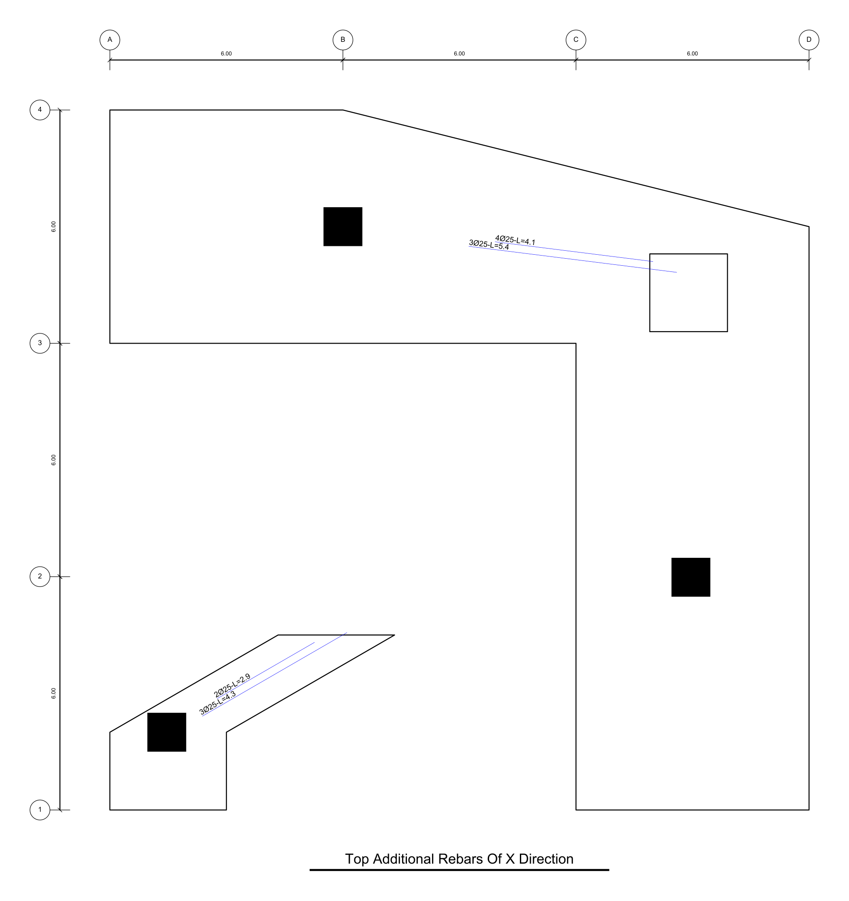
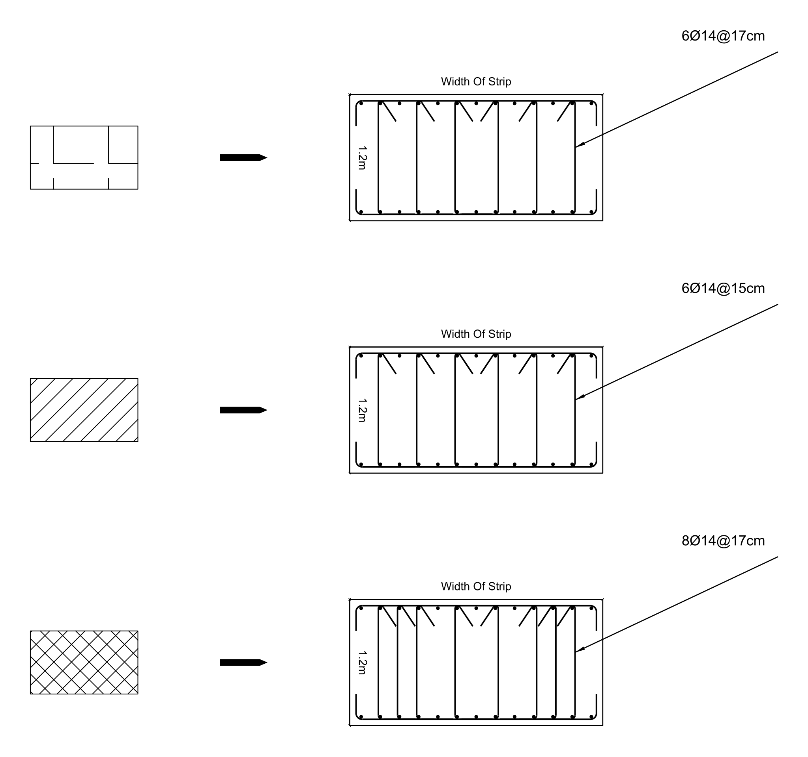
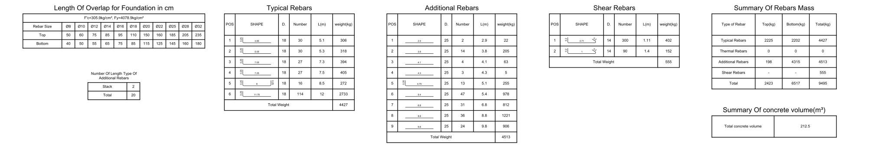
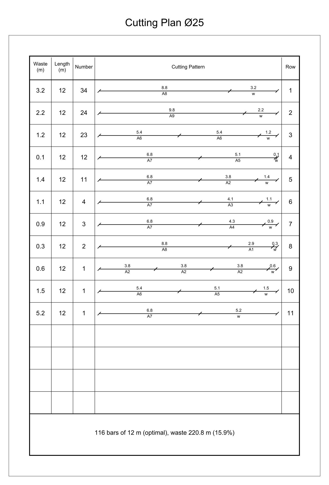

Outputs¶
DXF drawing¶
DXF Drawing saves the detailing map as a DXF file in meters. It opens in AutoCAD, AutoCAD LT, BricsCAD and free DXF viewers, and can be saved as DWG from any of them.
The drawing is laid out in model space as a row of sheets, each with the foundation plan, grids, grid dimensions and columns:
Name and width of the strips
Top typical rebars, X and Y direction
Top additional rebars, X and Y direction
Bottom typical rebars, X and Y direction
Bottom additional rebars, X and Y direction
Shear zones, hatched by shear type
Every bar is labelled with its number, diameter and length, for example 4Ø25-L=4.8, and follows the mid line of its strip.

Additional rebars are drawn in two colors, so the drawing is easier to check:
Blue (layers
Additional Rebar TopandAdditional Rebar Bottom): each bar is a stack of its own. Neighbouring bars can overlap, because their practical lengths are longer than their required lengths, but they don’t need an overlap length there.Magenta (layer
continuous Rebar): one bar longer than the 12 m stock length, made of several pieces. Where these pieces overlap, the overlap is the overlap length of the bar, 1.3 times its development length.

After the sheets come a section of every shear type, with its stirrups and label,

followed by the tables: overlap lengths, number of length types, the piece list of every rebar type with its bar shape and weight, the mass summary and the concrete volume. Last are the moment diagrams of every strip, with the resisting moment φMn and the ultimate moment Mu along the strip, top and bottom.

A piece list has one row per cut length, so it can have more rows than the number of length types you allowed: a bar longer than 12 m is cut into several pieces, and its last piece has a length of its own. The table of a rebar type is left out when the foundation has none of them, for example the thermal rebars.
The moment diagrams only count the tension steel, so φMn is a little lower than the real resisting moment; see Resistant Moment.
Each kind of object is on its own layer, for example Typical Rebar Top, Additional Rebar Bottom, Rebar Text, Dimension, Table or Moment Resistance, so parts of the drawing can be hidden or restyled. Every object takes its color and lineweight from its layer, so the drawing prints with its line weights either way: with the lineweights of the layers, or with a color dependent plot style (CTB) that gives each color a pen weight.
Below the sheets are the cutting plans: one or more portrait sheets per bar diameter, saying how to cut the pieces from 12 m stock bars.
Each row is a cutting pattern with the number of bars to cut that way, the pieces drawn to scale with their lengths, the waste (w), and the position of each piece in the piece lists, for example A5 for the fifth row of the additional rebars.

The plans use as few stock bars as possible, and every piece is cut exactly as many times as needed. They are solved exactly with an arc-flow integer program, which proves that no plan uses fewer bars. Its linear relaxation is solved first, and the number of bars it gives, rounded up, is a lower bound that is nearly always the optimum, so the integer program can stop as soon as it reaches it.
The line under each sheet gives the number of bars, whether the plan is proven optimal, and the waste. If the time limit stopped the solver before the proof, it says “not proven optimal” with the fewest bars any plan could use. The PDF drawing and the Report show the same.
PDF drawing¶
PDF Drawing saves an A4 sketch: one page per strip with its top and bottom additional rebars, followed by the mass summary, the technical specifications, the piece lists and the cutting plans. It is meant for a quick check, the DXF is the detailing map.
Results file and summary¶
Save Results writes two files, for example foundation_calculation.json and foundation_calculation_summary.txt.
The summary is the text of the Report box, headed by the input file and the main settings, and ends with every pattern of the cutting plans. It is meant for reading and for attaching to a report.
The JSON file holds everything needed to reproduce or post-process the result:
Key |
Content |
|---|---|
|
The OPTiBAR version that produced the result. |
|
Date and time of saving. |
|
The SAFE database the project was loaded from. |
|
|
|
The settings of the calculation. |
|
The engine output, see below. |
For a computation, result has a data key with the detailed foundation, and warnings when there are any.
When the number of length types is too small to be feasible, result has an errors key with min_feasible_num, the smallest total number of length types that works.
The main parts of result["data"] are:
Key |
Content |
|---|---|
|
Rebar mass in tons by type and level, and the concrete volume in m³. |
|
The piece list of the typical, thermal, additional and shear rebars: diameter, length, number and bends. |
|
Per strip: geometry, the bars of every row with their practical stations and bends, shear zones, and the moment diagrams. |
|
Materials, covers, the special lengths per diameter, and the numbers of length types used. |
|
The shear arrangements: diameter, number of legs and spacing. |
|
The foundation outline, openings, columns and grid lines. |
|
The cutting plan of every diameter: stock length, number of bars, waste, whether the plan is proven optimal ( |
For an analysis, result is a list with the data part of every combination, or {} where a combination isn’t feasible.
Exported tables¶
Export… saves the results as tables, for a spreadsheet or another program. The file type sets the format:
Excel workbook (
.xlsx): a sheet per table, with the headers frozen and filters on. It also opens in Google Sheets and LibreOffice Calc.CSV files (
.zip): a zip with a CSV file per table, numbered in the order below, for example02_mass_summary.csv. The files are UTF-8, so Excel shows Ø and ³ correctly.JSON tables (
.json):meta, andtableswith the columns of every table, each with its name and unit, and the rows as objects keyed by column name. Unlike the results file, it holds the tables, not the engine output.
The values are numbers, not text, so they can be summed and sorted; the units are in the column headers, for example Length (m). An empty cell means the value doesn’t apply, for example the top mass of the shear rebars.
The first sheet, or 00_about.csv, says which OPTiBAR version made the file, when, from which input file, and whether it is a computation or an analysis.
For a computation, the tables are:
Table |
Content |
|---|---|
Settings |
Every setting of the calculation, with its unit. |
Mass Summary |
Rebar mass in t by type, top and bottom, and the total. |
Typical Rebars, Thermal Rebars, Additional Rebars |
The piece lists: position ( |
Shear Rebars |
The piece list of the stirrups: position ( |
Shear Types |
The shear arrangements: diameter, number of legs and spacing. |
Cutting Plans |
Per diameter: stock length, number of bars, whether the plan is proven optimal, the fewest bars any plan could use, waste and number of patterns. |
Cutting Patterns |
Every pattern: the number of bars to cut that way, its pieces with their positions, the used length and the waste. |
Bars |
Every bar along every strip: strip, level, typical or additional, row, number, diameter, start and end along the strip, length, bends, and whether it is spliced from several pieces (one row each). |
Shear Zones |
Every shear zone: strip, shear type, start, end and length. |
Specifications |
Concrete and steel strength, covers, the numbers of length types and the concrete volume. |
Rebar Specifications |
Per diameter: bend lengths, development lengths and overlap lengths, top and bottom. |
Warnings |
The warnings of the report: warning, strip, level, the value and its limit. |
When the number of length types is too small to be feasible, the file has Settings and Errors, with the smallest total number of length types that works.
For an analysis, the file has Settings and Analysis: a row per combination of Stack and Total with the mass of the typical, thermal and additional rebars, their total, and the shear rebars. A combination that isn’t feasible has no masses.